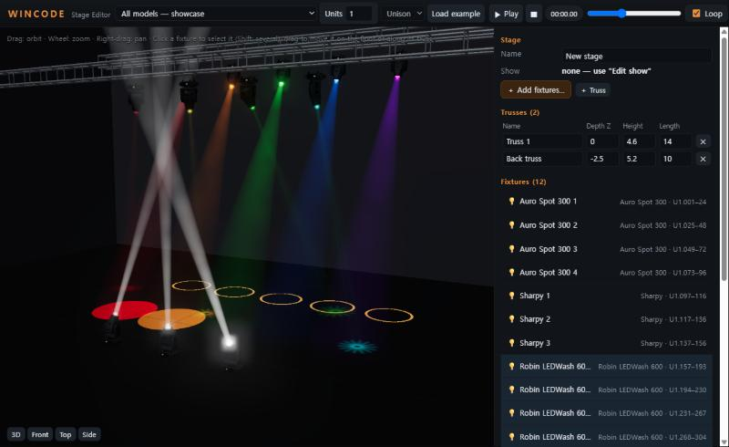
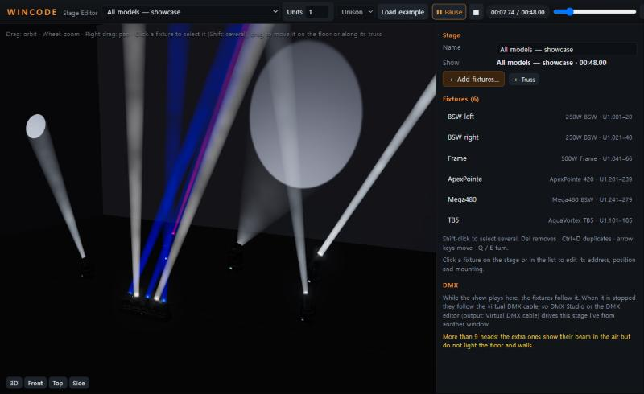
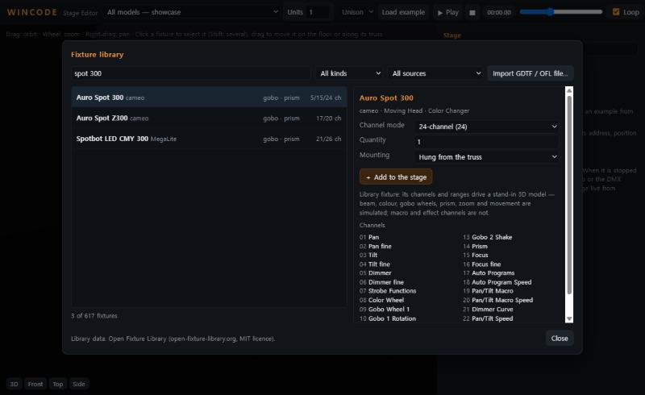
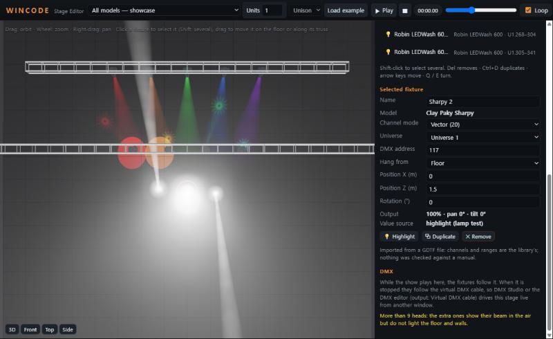

Wincode Stage Editor User Manual · build a 3D stage from a fixture library and watch it follow DMX
1. What the Stage Editor is
The Stage Editor is a 3D stage in the browser. You take fixtures from a library, hang them on trusses or stand them on the floor, give them DMX addresses, and the stage shows what they do — beams in haze, colours, gobos and movement — when a console sends DMX.

It is the "visualiser" half of a lighting system. The "console" half is Wincode DMX Studio or the simulator's built-in DMX editor.
| Where fixtures come from | How many | How they look |
|---|---|---|
| Wincode models | 5 | Their own 3D body, built from the manual and product photos; working front panel and menu. |
| Open Fixture Library (bundled) | 610, from 127 manufacturers | A stand-in body; their own channels, colours and beam. |
| Imported files — GDTF or Open Fixture Library JSON | as many as you import | The same stand-in body. |
Open it at samcho93.github.io/wincodeMovingHead/stage.html, or locally with npm start at http://127.0.0.1:7740/stage.html. Use Chrome or Edge.
2. The screen

| Top bar | What it does |
|---|---|
| Example list · Units · style · Load example | Ready-made stages with a programmed show (chapter 3). |
| ▶ Play · ■ · time · slider · Loop | Plays the show of this stage. |
| Haze · Work light | How visible the beams are in the air; a bright room for building and positioning. |
| New · Open · Save | Stage files (chapter 11). |
| ⟲ From editor · 🎚 DMX Studio · 🎛 Edit show · 🔦 Simulator | The programs that make the light (chapter 12), and the single-fixture simulator. |
| The pill at the right | Playing the show · Following the virtual DMX cable · No DMX — where the fixtures get their values from, now. |
| 3D view | |
|---|---|
| Drag | Orbit the camera. |
| Wheel | Zoom. |
| Right-drag | Pan. |
| 3D Front Top Side (bottom left) | Camera presets. Top with Work light on is the plan view for positioning. |
The side panel holds the stage's name, the trusses, the list of fixtures and, below it, the settings of what is selected.
3. Examples and playback
Choose an example and press Load example: it replaces the stage and starts playing.
- All models — showcase: all five Wincode models in a 48-second show.
- One model each: Units sets how many of that fixture stand on the stage (up to 8), and the style how they play together — Unison, Mirror, Fan, Wave, Canon.
▶ Play / ❚❚ Pause and ■ control the show; drag the slider to jump; Loop repeats it. A stage you build yourself has no show until you program one (chapter 12) — until then it follows the DMX it receives.
4. The fixture library
Press ＋ Add fixtures… in the side panel.

- Search. Type part of a name or a manufacturer. Several words narrow the list: spot 300, robe wash.
- Filter if you like. All kinds → moving heads, colour changers, pixel bars, blinders, strobes … All sources → Wincode, Open Fixture Library, imported files.
- Click a fixture. The right side shows its manufacturer and kind, and the channels of the chosen mode, numbered.
- Choose the channel mode. The channel list follows.
- Quantity: how many to add (1–48).
- Mounting: Hung from the truss or On the floor.
- Press ＋ Add to the stage.
The fixtures arrive as a row, already selected:
- On a truss they hang next to what is already there, or centred when the truss is empty. If there is no truss yet, one is made.
- On the floor they take the first free row, starting near the front.
- Addresses are given automatically: the first free block in universe 1, and the next universe when one is full.
Each row of the list tells you what a fixture has — rgb (colour mixing), gobo, prism — and the sizes of its channel modes, for instance 5/15/24 ch.
5. Importing GDTF and OFL files
For a fixture that is not in the library, get its file and press Import GDTF / OFL file… in the library window — or drop the files anywhere on the window. Several files can be imported at once.

| Format | Where to get it |
|---|---|
GDTF (.gdtf) | The open fixture format of the lighting industry (DIN SPEC 15800). Manufacturers publish their fixtures at gdtf-share.com; grandMA3, Vectorworks, Capture and others use the same files. |
Open Fixture Library (.json) | open-fixture-library.org — download a fixture in its own format, or write one in its fixture editor. |
What is read from a GDTF file: name and manufacturer, the wheels with their slot names and colours, every DMX mode with its channels, functions and value ranges, and the beam angle. What is not read: the 3D model inside the file, and channels repeated through geometry references (the cells of a pixel fixture appear once).
Imported fixtures stay in this browser's library. Forget removes one from the library; stages that use it keep their copy.
6. Trusses
＋ Truss adds a truss; the Trusses table lists them.
| Column | Meaning |
|---|---|
| Name | Shown in the Hang from lists. |
| Depth Z | How far back the truss is, in metres. 0 is the middle of the stage, negative is towards the back wall. |
| Height | Height of the lower chords, where the fixtures hang (1.5–6.5 m). |
| Length | Length in metres, centred on the stage. |
| ✕ | Removes the truss. What hung from it goes to the floor. |
Fixtures follow their truss: change its depth or height and they move with it. Trusses run from left to right.
7. Selecting and moving
| Action | How |
|---|---|
| Select one | Click it on the stage or in the list. An orange ring on the floor marks it. |
| Select several | Shift-click (or Ctrl-click) more — on the stage or in the list. |
| Select all · none | Ctrl+A · Esc, or click an empty part of the stage. |
| Move | Drag a selected fixture: everything selected moves with it, in steps of 10 cm. A fixture on a truss slides along the truss only. |
| Nudge | Arrow keys: 10 cm. With Shift: 50 cm. Up / down move away from and towards you. |
| Turn | Q / E: 15° left / right. |
| Duplicate | Ctrl+D. The copy stands 60 cm to the right and gets the next free address. |
| Remove | Del. |
The keys work while the pointer is not in a text field.
8. One fixture: patch and position

| Field | Meaning |
|---|---|
| Name | Shown in the list, and in the console the stage is handed to. |
| Channel mode | Which of the fixture's channel layouts it is set to. Must be the mode the console uses. |
| Universe · DMX address | Where the fixture listens. The list shows the range it occupies: U1.117–136. |
| Hang from | Floor, or one of the trusses. A hung fixture is upside down, as in reality. |
| Position X · Z (m) | Left–right and front–back. On a truss only X can be set. |
| Rotation (°) | Turns the whole fixture around its vertical axis. |
| Aim (°) | Only for a fixture without tilt (a PAR, a bar): the angle at which it is clamped. 0 = straight down from a truss, straight up from the floor. |
| Output | Its intensity, pan and tilt at this moment. |
| Value source | DMX … Hz, no DMX signal, or highlight (lamp test). |
For a Wincode model, 🔦 Open in simulator opens that fixture alone, with its front panel and menu.
9. Several fixtures at once

| Tool | What it does |
|---|---|
| ↔ Spread evenly | Equal spacing between the leftmost and the rightmost of the selection. If they stand on one spot, they are spread 1.2 m apart. |
| ⇥ Same depth | Puts the floor fixtures of the selection in one line, at the depth of the first. |
| ⟲ Face front | Rotation 0 for all. |
| ⇋ Fan | Mirrors the rotation left and right of the middle: the left half turns one way, the right half the other (30° if none was set). |
| Hang from | Moves the whole selection to a truss, or to the floor. |
| Re-address | Choose a universe and a start address and press Apply: the selection gets consecutive addresses from there, left to right, skipping what other fixtures occupy and continuing in the next universe when one is full. |
| 💡 Highlight · ⧉ Duplicate · ✕ Remove | For the whole selection. |
10. Highlight — the lamp test
💡 Highlight makes the selection shine open, full and white — whatever the show or the console sends. A lamp appears before the fixture's name in the list. Press it again to give the fixture back.
Use it to see where a fixture points while you position it, to check which fixture is which, and to see a library fixture's beam before any console is connected.
11. Stage files
| Button | What it does |
|---|---|
| Save | Downloads name.stage.json: trusses, positions, the patch, the show — and the description of every library fixture used, so the file opens on any computer. |
| Open | Loads a stage file. |
| New | An empty stage. |
The stage you are working on is also kept in the browser and comes back the next time you open the page.
12. Making light: DMX Studio and the DMX editor
The Stage Editor shows light; it does not program it. Whenever its own show is not playing, the stage follows the virtual DMX cable — a connection between pages of the same site.
| Program | How to use it with the stage |
|---|---|
| Wincode DMX Studio — the lighting console | Patch the same fixtures there (it has the same library) and press its 🎭 3D Stage: it hands its patch to this page and the fixtures appear here at the same addresses. Or build the stage here and patch the studio to match. Then program in the studio; the stage follows. |
| DMX editor — built into the simulator | 🎛 Edit show opens this stage's patch in the editor. Make scenes, chasers, effects and a show there. ⟲ From editor brings the result back; it then plays here with ▶ Play and is saved in the stage file. |
| A real console (Art-Net, sACN) | Not directly: the stage listens to the virtual DMX cable only. The single-fixture simulator page is the one that receives Art-Net and sACN through the local server. |
The pill at the top right tells you what is happening: Following the virtual DMX cable means a console page is sending and the stage obeys it.
13. What a library fixture does
A Wincode model is written by hand from its manual. A library fixture is built automatically from its channel chart, so it does what the chart describes and no more.
| Simulated | Not simulated |
|---|---|
| Dimmer, shutter, strobe (also pulse and random) Pan and tilt with their real ranges, pan/tilt speed, continuous pan Colour wheel with the library's colours, half-colour positions, wheel rotation RGB / RGBW / amber / UV … mixing, CMY mixing Two gobo wheels, gobo rotation and indexing, shake Prism and prism rotation · zoom · focus · frost |
The fixture's real shape — all use one stand-in body The real gobo pictures — stand-in patterns are drawn Single pixels of a bar or matrix — they are averaged into one beam Macro, effect, programme and maintenance channels Iris, framing shutters, colour temperature channels The front panel and menu |
Library data is written by volunteers and manufacturers and was not checked against the fixtures' manuals. Before a real show, compare the channel list in the library window with the fixture's manual.
14. A stage in ten minutes
- Start empty. Press New. Tick Work light.
- Hang four spots. ＋ Add fixtures… → search auro spot 300 → click it → Quantity 4, Hung from the truss → ＋ Add to the stage. A truss appears with four fixtures; they are selected.
- See them. Press 💡 Highlight. Four white beams point straight down. Untick Work light to see them in haze.
- Add a back truss. ＋ Truss. In the table name it Back truss, set Height to 5.2 and Length to 10.
- Hang five washes on it. Add 5 × Robin LEDWash 600 on the truss. With the five still selected, set Hang from to Back truss, then press ↔ Spread evenly.
- Floor fixtures from a GDTF file. In the library press Import GDTF / OFL file…, choose a
.gdtffile, set Quantity 3 and On the floor, and add. - Check the plan. Press Top: both trusses and the floor row from above. Drag fixtures where you want them; use the arrow keys for small steps.
- Check the addresses. The list shows each range. To renumber a group, select it, set Re-address to U1 and a start address, press Apply.
- Save. Type a name at the top of the side panel and press Save.
- Make light. Press 🎛 Edit show to program in the DMX editor, or patch the same fixtures in DMX Studio and work from there.

15. Limits and troubleshooting
| Question | Answer |
|---|---|
| A yellow line says "More than 9 heads". | The first nine heads light the floor and walls; the others still show their beam in the air. It keeps the picture smooth. Only the first three single-head fixtures cast shadows. |
| A fixture stays dark. | Select it and look at Value source. no DMX signal: nothing is sending on its universe. With a signal: check that mode and address match the console, and that its shutter channel is open — a fixture with a closed shutter is dark at full dimmer. 💡 Highlight shows whether the fixture itself works. |
| The stage does not follow DMX Studio. | Both pages must come from the same site: both on samcho93.github.io, or both through the local server (http://127.0.0.1:7740/stage.html and …/studio/). And the stage's own show must be stopped. |
| A fixture I patched in a console does not appear. | Generic profiles (plain dimmer, RGB …) have no 3D model. Use a library fixture instead. |
| A GDTF file is refused. | The message says why. A file without DMX modes, or one that is not a GDTF archive, cannot be read. A pixel fixture whose cells are defined through geometry references imports with one cell only. |
| Colours of a wheel look wrong. | They are the library's. A slot without a colour in the library is shown white. |
| Can a truss run front to back, or at an angle? | Not yet: trusses run left to right. The room is 16 × 14 m and 7 m high and cannot be changed. |
| Where did my imported fixture go on another computer? | The library of imported files belongs to the browser. A stage file carries the fixtures it uses, so open the stage file there. |